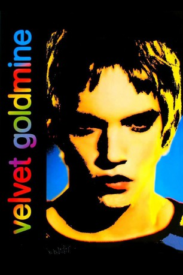

#6361 Velvet Goldmine
Auszeichnungen: für 1 Oscars nominiert 1 BAFTA-Awards gewonnen
 
 IMDB-Wertung: 7.0 / 10
IMDB-Wertung: 7.0 / 10  Tomatometer: 56
Tomatometer: 56  Metascore: 0
Metascore: 0 
Auf der Höhe seines Ruhms täuscht Brian Slade, der unangefochtene König des Glam Rock, seine eigene Ermordung vor und verschwindet spurlos. Zehn Jahre später soll der Journalist Arthur Stuart die Hintergründe des Popskandals aufhellen. Ein Rückblick auf die 70er Jahre und ihre Pop-Ikonen.
Jahr: 1998
Dauer: 118 Minuten
FSK: 12
Land: England Studio: Tobis FilmkunstTonspuren: DD5.1 - ,
Untertitel:
Auflösung: 1080p (1920x1040) Größe: 9277 MB
Genre: Drama, Musik
Regisseur:  Todd Haynes
Todd Haynes
Drehbuch: James Lyons
Soundtrack:
Darsteller:
 Ewan McGregor als Curt Wild
Ewan McGregor als Curt Wild Jonathan Rhys Meyers als Brian Slade
Jonathan Rhys Meyers als Brian Slade Christian Bale als Arthur Stuart
Christian Bale als Arthur Stuart Toni Collette als Mandy Slade
Toni Collette als Mandy Slade Eddie Izzard als Jerry Devine
Eddie Izzard als Jerry Devine- Emily Woof als Shannon
- Michael Feast als Cecil
 Janet McTeer als Female Narrator
Janet McTeer als Female Narrator- Danny Nutt als Kissing Sailor
- Wash Westmoreland als Young Man
- Alastair G. Cumming als Tommy Stone
- Emma Handy als Mod Girlfriend
- Joseph Beattie als Cooper
- Peter King als Cecil's Friend 2
 Justin Salinger als Rodney
Justin Salinger als Rodney Nathan Osgood als US Reporter 3
Nathan Osgood als US Reporter 3- Xavior als Pearl
- Keith-Lee Castle als Harley
- Eden Ford als Bass Guitar
- Mairead McKinley als Wilde Housemaid
- Luke Morgan Oliver als Oscar Wilde, 8
- Osheen Jones als Jack Fairy, 7
- Micko Westmoreland als Jack Fairy
- Damian Suchet als BBC Reporter
- Don Fellows als Lou
- Ganiat Kasumu als Mary
- Ray Shell als Murray
- Zoe Boyce als Girl on Subway
- Jim Whelan als Mr. Stuart
- Sylvia Grant als Mrs. Stuart
- Tim Hans als Manchester Teacher
- Ryan Pope als Arthur's Brother
- Stuart Callaghan als Boy in Record Shop 1
- James Francis als Boy in Record Shop 2
- Callum Hamilton als Brian Slade, 7
- Lindsay Kemp als Pantomime Dame
- Carlos Miranda als Pianist
- Matthew Glamour als Mimosa
- Daniel Adams als Curt Wild, 13
- Bryan Torfeh als Bartender
- Sarah Cawood als Angel
- David Hoyle als Freddi
- Winston Austin als Micky
- Ivan Cartwright als Cecil's Friend 1
- Roger Alborough als Middle Age Man
- Peter Bradley Jr. als 30's Style Singer
- Jonathan Cullen als Reporter 1
- William Key als Reporter 2
- Vincent Marzello als US Reporter 1
- Corey Skaggs als US Reporter 2
Datei: X:\1998\Velvet Goldmine (1998, FSK12, 1920x1040).mkv seit 10.06.2017
Festplatte: HD 1996-2002
 Es gibt insgesamt 86 Filme in der Gruppe '1998'
Es gibt insgesamt 86 Filme in der Gruppe '1998'